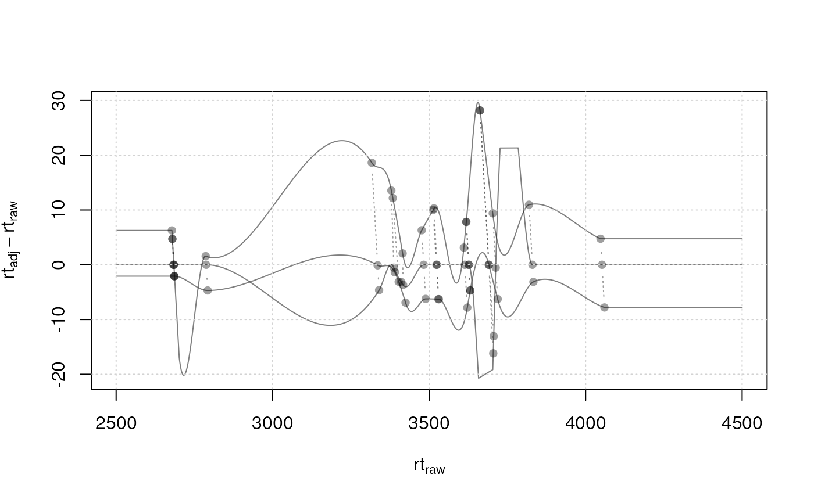

Plot the difference between the adjusted and the raw retention
time (y-axis) for each file along the (adjusted or raw) retention time
(x-axis). If alignment was performed using the
adjustRtime-peakGroups method, also the features (peak
groups) used for the alignment are shown.
plotAdjustedRtime( object, col = "#00000080", lty = 1, lwd = 1, type = "l", adjustedRtime = TRUE, xlab = ifelse(adjustedRtime, yes = expression(rt[adj]), no = expression(rt[raw])), ylab = expression(rt[adj] - rt[raw]), peakGroupsCol = "#00000060", peakGroupsPch = 16, peakGroupsLty = 3, ylim, ... )
| object | A |
|---|---|
| col | colors to be used for the lines corresponding to the individual samples. |
| lty | line type to be used for the lines of the individual samples. |
| lwd | line width to be used for the lines of the individual samples. |
| type | plot type to be used. See help on the |
| adjustedRtime | logical(1) whether adjusted or raw retention times should be shown on the x-axis. |
| xlab | the label for the x-axis. |
| ylab | the label for the y-axis. |
| peakGroupsCol | color to be used for the peak groups (only used if
alignment was performed using the |
| peakGroupsPch | point character ( |
| peakGroupsLty | line type ( |
| ylim | optional |
| ... | Additional arguments to be passed down to the |
adjustRtime for all retention time correction/
alignment methods.
Johannes Rainer
## Load a test data set with detected peaks data(faahko_sub) ## Update the path to the files for the local system dirname(faahko_sub) <- system.file("cdf/KO", package = "faahKO") ## Performing the peak grouping using the "peak density" method. p <- PeakDensityParam(sampleGroups = c(1, 1, 1)) res <- groupChromPeaks(faahko_sub, param = p)#>#>## Perform the retention time adjustment using peak groups found in both ## files. fgp <- PeakGroupsParam(minFraction = 1) res <- adjustRtime(res, param = fgp)#>#> Warning: Span too small for 'loess' and the available number of peak groups, resetting to 0.21#> Warning: Adjusted retention times had to be re-adjusted for some files to ensure them being in the same order than the raw retention times. A call to 'dropAdjustedRtime' might thus fail to restore retention times of chromatographic peaks to their original values. Eventually consider to increase the value of the 'span' parameter.#>#>## Visualize the impact of the alignment. We show both versions of the plot, ## with the raw retention times on the x-axis (top) and with the adjusted ## retention times (bottom). par(mfrow = c(2, 1)) plotAdjustedRtime(res, adjusted = FALSE) grid() plotAdjustedRtime(res)grid()